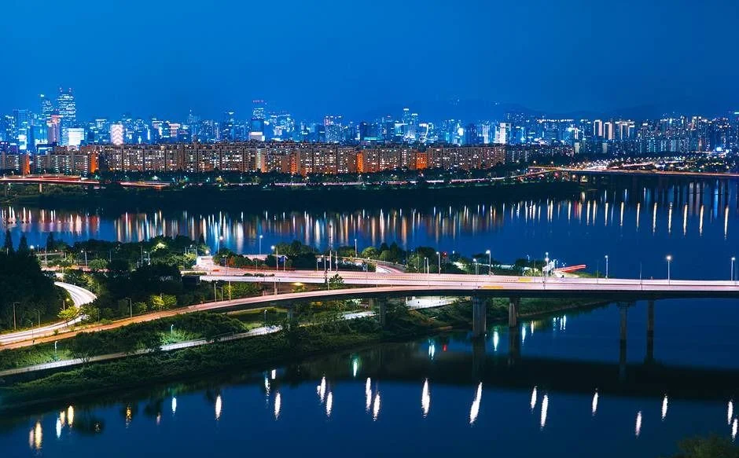
▲ 응봉산 야경 사진 묶음에 포함된 한강 일대 야경. 촬영 시기는 자료에 없다 ⓒ 한국관광공사 · 공공누리 제1유형
"서울 야경은 남산이나 한강 공원에서만 보는 줄 알았는데, 지하철역에서 걸어 오르는 낮은 산에서도 한강과 중랑천이 만나는 풍경이 보인다고?" 이 글은 2026년 10월 20일 기준으로 서울시 미디어허브·서울시 영문 안내·한국관광공사·한국천문연구원 자료로 성동구 응봉산 팔각정의 전망, 오르는 길, 주차와 대중교통, 겨울 새벽과 일몰 시각을 정리했다. 서울시 미디어허브 응봉산 안내 바로가기
응봉산은 봄 개나리 명소로만 알려져 있어 개나리가 지고 나면 찾는 사람이 줄어드는 곳이다. 서울시 미디어허브는 이곳을 일몰과 야경을 보러 오는 곳으로도 소개한다. 가을·겨울에는 해가 빨리 지므로 시간표를 먼저 알아 두는 편이 낫다.
💡 먼저 결론
응봉산 팔각정은 서울시 미디어허브 안내상 24시간·연중 개방, 무료다. 응봉역 1번 출구에서 등산로 입구까지 약 10분, 입구에서 정상까지 15~20분으로 안내되지만 같은 서울시 자료 안에서도 8분·10분으로 표기가 달라 시간은 넉넉히 잡아야 한다. 산 높이는 자료마다 81m, 약 95m로 다르다. 서울의 11월 말~12월 초 일몰은 17시 14분 안팎이고, 2027년 1월 1일 일출은 07시 47분이다(한국천문연구원).
1. 먼저 바로잡기 — 응봉산에 대해 자료마다 다른 것
한국관광공사는 응봉산(서울)을 성동구 응봉동에 있고 높이 약 95m의 근린공원으로 소개한다. 조선시대 왕이 매를 풀어 사냥하던 곳이라 매봉산이라고도 불렸고, 지금은 시민들이 일몰과 야경을 보러 찾는다고 설명한다. 서울시 미디어허브(2026-04-02)는 해발 약 95.4m, 주소는 금호동4가 1540으로 적는다. 반면 서울시 영문 안내와 한 언론 칼럼은 81m로 적는다. 이 글은 높이를 어느 한쪽으로 단정하지 않고 "낮은 산"으로만 쓴다.
| 항목 | 확인한 내용 | 근거 |
|---|---|---|
| 산 높이 | 약 95m(관광공사), 약 95.4m(서울시 미디어허브), 81m(서울시 영문·언론). 공식 단일 수치는 확인하지 못함 | 관광공사·서울시 |
| 개방·요금 | 24시간, 연중무휴, 무료 | 서울시 미디어허브(2026-04-02) |
| 응봉역에서 걷는 시간 | 등산로 입구까지 약 10분 + 정상까지 15~20분(2026-04 기사), 1번 출구에서 8분(2025-04 기사), 정상까지 약 670m·20분(언론) | 서울시 미디어허브·언론 |
| 개나리축제 | 2026년은 3월 27~28일 팔각정 일대에서 열림. 지금(10월)은 축제 기간이 아님 | 서울시 미디어허브 |
| 조망 방향 | 남동쪽 서울숲·한강, 남서쪽 일몰 방향(언론). 중랑천과 한강이 만나는 합류부가 보인다는 서울시 미디어허브 설명 | 서울시 미디어허브·언론 |
"한강·중랑천 합류부" 조망은 서울시 미디어허브(2025-04-22)가 정상에서 보인다고 소개한 내용이다. 합류 지점의 정확한 위치와 방향은 공식 안내에 없어 단정하지 않는다.
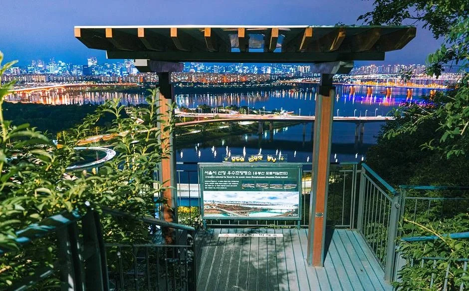
▲ 응봉산 야경 사진 묶음에 포함된 전망 데크 장면. 촬영 시기는 자료에 없다. ⓒ 한국관광공사 · 공공누리 제1유형
야경 사진만 보면 어두운 산 같지만 낮에는 윤곽이 전혀 다르다. 서울시 미디어허브는 응봉산이 토사가 흘러내리던 바위산이었고, 이를 막으려 심기 시작한 개나리가 지금은 약 20만 그루 군락이 됐다고 소개한다. 같은 글은 개나리 너머로 한강과 서울숲, 경의중앙선 열차가 지나가는 풍경이 서울을 대표하는 봄 사진 명소라고 적는다. 아래 두 장은 Korea.net이 올린 2016년 4월 1일 촬영본이라 지금(10월)의 모습은 아니며, 바위 사면의 생김새와 정상부 정자의 위치를 가늠하는 용도로 보면 된다.
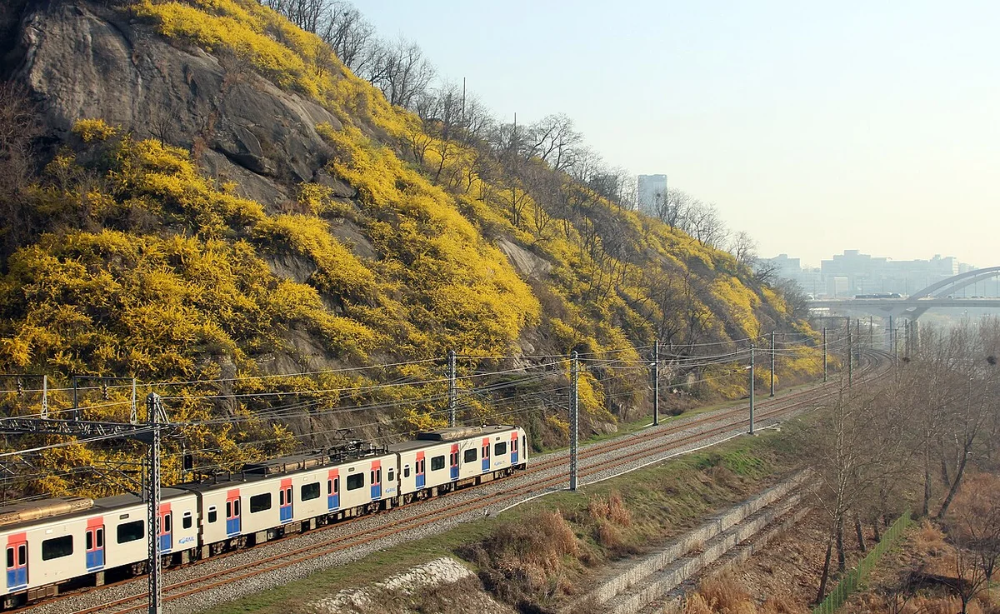
▲ 노란 꽃이 덮인 산자락 아래로 열차가 지나가는 장면. 원본 설명상 촬영일은 2016-04-01로 지금 시기의 모습이 아니다. ⓒ Korea.net(문화체육관광부 해외문화홍보원), Wikimedia Commons (CC BY-SA 2.0)
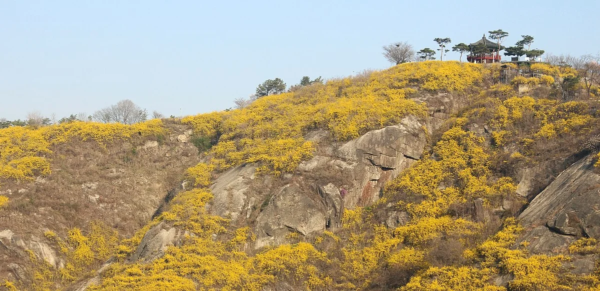
▲ 산 능선 위쪽에 정자 지붕이 작게 보이는 응봉산 전경. 원본 설명상 촬영일은 2016-04-01이다. ⓒ Korea.net(문화체육관광부 해외문화홍보원), Wikimedia Commons (CC BY-SA 2.0)
2. 팔각정에서 보이는 것 — 다리와 한강, 멀리 고층 빌딩
서울시 미디어허브는 정상 일대에서 한강이 넓게 보이고, 일몰 때 남산타워·롯데타워·성수대교 야경이 시야에 들어온다고 소개한다. 언론 칼럼은 팔각정에서 중랑천의 용비교, 응봉교, 동호대교, 성수대교, 한남대교 등이 내려다보인다고 적는다. 다만 시야는 날씨와 미세먼지에 달려 있어 공식 자료로 가시 거리를 확인할 수는 없다. 서울시 미디어허브 응봉산 야경 글 바로가기
▲ 한강 건너 도시의 불빛이 수면에 비친 장면. 촬영 시기는 자료에 없다. ⓒ 한국관광공사 · 공공누리 제1유형
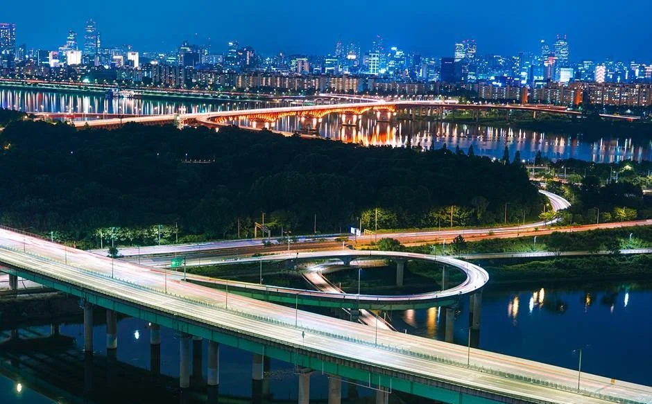
▲ 강가를 따라 이어지는 도로와 도시 야경. 촬영 지점은 자료에 없다. ⓒ 한국관광공사 · 공공누리 제1유형
낮에 팔각정에서 본 시야는 어떨까. Wikimedia Commons에는 "응봉산 팔각정에서 본 풍경"으로 올라온 사진이 있다. 구름이 낀 하늘 아래 한강과 다리, 강 건너 고층 건물이 한눈에 들어오는 구도다. 시야는 날씨에 따라 크게 달라지므로 구름이 많은 날의 사례로만 참고하자.
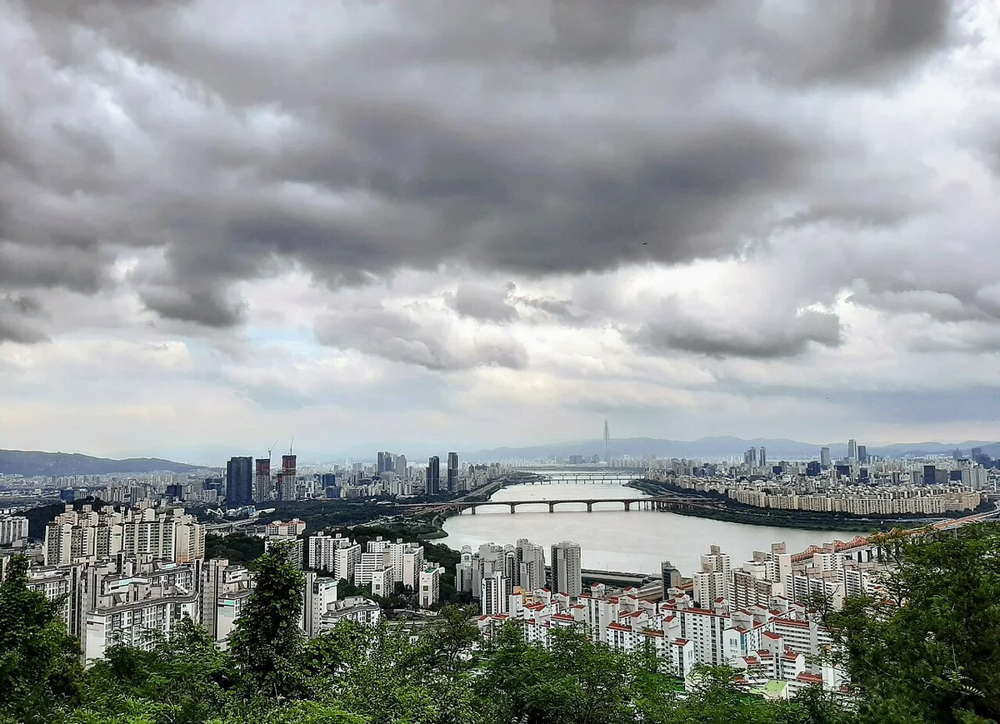
▲ 구름이 낀 낮 하늘 아래 한강과 다리, 도심이 내려다보이는 장면. 업로더 설명은 응봉산 팔각정에서 본 풍경이며 촬영일은 2019-07-29(원본 정보). 어느 다리인지는 자료에 없다. ⓒ Taewangkorea, Wikimedia Commons (CC BY-SA 4.0)
| 대상 | 확인한 내용 | 근거 |
|---|---|---|
| 한강·다리 | 성수대교·동호대교·한남대교·응봉교·용비교(중랑천)가 보인다는 설명 | 언론 칼럼 |
| 고층 건물 | 남산타워·롯데타워가 보인다는 설명 | 서울시 미디어허브·언론 |
| 서울숲 | 남동쪽으로 서울숲과 한강이 보인다는 설명 | 언론 칼럼·서울시 미디어허브 |
| 전망 설비 | 사진상 망원경과 야간 전망 데크가 보이나 설치 현황·운영 여부는 공식 확인하지 못함 | 관광공사 사진 |
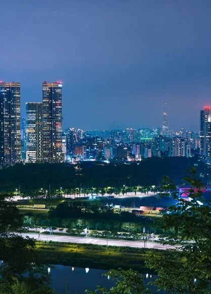
▲ 한강 쪽 고층 빌딩과 도시 불빛을 담은 세로 사진. 어느 빌딩인지는 자료에 없다. ⓒ 한국관광공사 · 공공누리 제1유형
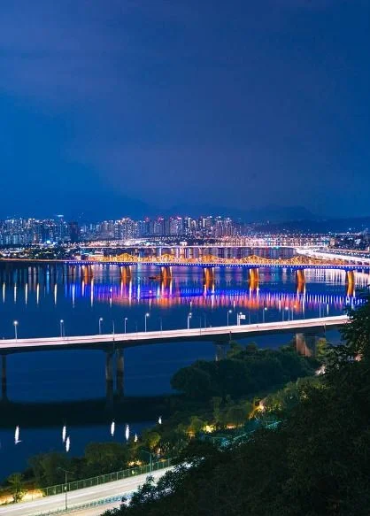
▲ 강 위 다리 조명이 보이는 세로 사진. 어느 다리인지는 자료에 없다. ⓒ 한국관광공사 · 공공누리 제1유형
3. 일출·일몰 시각 — 한국천문연구원 서울 자료
한국천문연구원이 공개한 서울 기준 2026년 10~12월과 2027년 1월 1일 값이다. 10월 말부터 일몰이 17시대 초반으로 앞당겨지며, 아래 표의 날짜 중에는 12월 1일의 17시 14분이 가장 이르다. 시민박명 종료는 12월 1일 17시 43분이다. 이 시각은 서울 전체 기준이라 응봉산 정상의 지형 차이는 반영하지 않았다. 한국천문연구원 출몰시각 조회 바로가기
| 날짜 | 일출 | 일몰 |
|---|---|---|
| 2026-10-20 | 06:45 | 17:49 |
| 11월 1일 | 06:57 | 17:34 |
| 11월 15일 | 07:11 | 17:22 |
| 12월 1일 | 07:28 | 17:14 |
| 12월 15일 | 07:39 | 17:15 |
| 12월 21일 | 07:43 | 17:17 |
| 12월 31일 | 07:47 | 17:23 |
| 2027-01-01 | 07:47 | 17:24 |
서울시 미디어허브는 일몰 전후 약 30분 동안 개나리가 노을을 머금어 색감이 좋다고 소개한다. 개나리 철이 아니더라도 일몰 30분 전에는 정상에 올라 있는 편이 좋다. 1월 1일 새벽에는 일출 전 어둠 속에서 오르게 되며, 성동구는 해맞이축제 때 대중교통 이용을 권했다(2024년 안내 기준).
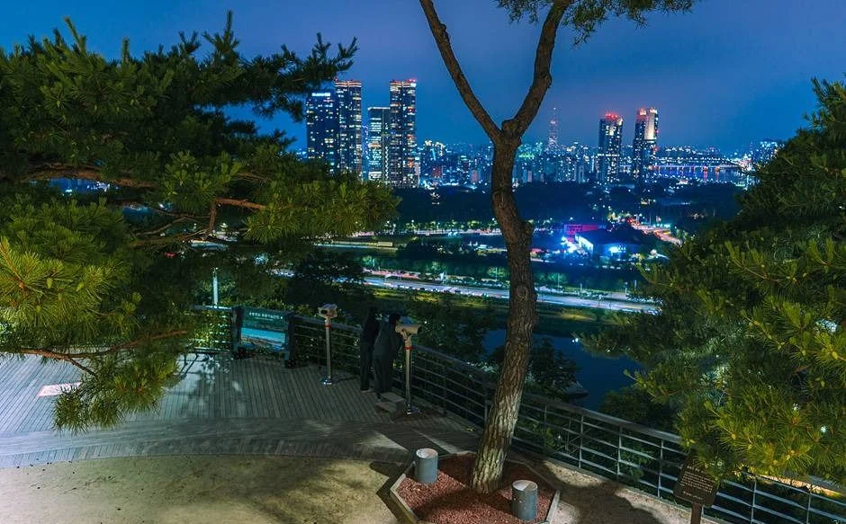
▲ 소나무가 있는 전망 데크에서 본 야경. 촬영 시기는 자료에 없다. ⓒ 한국관광공사 · 공공누리 제1유형
4. 오르는 길 — 응봉역에서 정상까지
서울시 미디어허브(2025-04-22)는 경의중앙선 응봉역 1번 출구에서 나와 왼쪽으로 돌아 녹색 철망 담을 따라가라고 안내한다. 도로반사경이 보이면 길을 건너 주택가로 들어가 바닥 화살표를 따라 직진하고, 첫 갈림길에서 왼쪽으로 오르는 길이다. 2026년 4월 기사는 본문에서 등산로 입구까지 약 10분, 거기서 정상까지 15~20분으로 적었지만 같은 기사 하단 정보란에는 1번 출구에서 도보 8분으로 적혀 있어 표기가 엇갈린다. 계단이 있어 짐이 많으면 힘들 수 있다. 서울시 미디어허브 안내 바로가기
| 경로 | 내용 | 비고 |
|---|---|---|
| 경의중앙선 응봉역 1번 출구 | 등산로 입구까지 약 10분, 정상까지 15~20분 | 가장 많이 안내되는 경로 |
| 3호선 옥수역 4번 출구 | 마을버스 성동01 "무쇠막" 정류장 하차, 용비교 방향 약 2분 걸으면 등산 데크 | 완만한 경로, 금호 방향 하산에 적합(자료 설명) |
| 시내버스 | 110A·110B·241·421·2233·4211번이 "응봉동현대아파트" 정류장에 정차, 등산로 입구까지 도보 약 8분(계단 있음) | 노선은 변경될 수 있어 확인 필요 |
| 정상에서 하산 | 서울시 영문 안내는 응봉역에서 팔각정을 거쳐 행당역까지 걷는 경로를 소개 | 소요 시간은 확인하지 못함 |
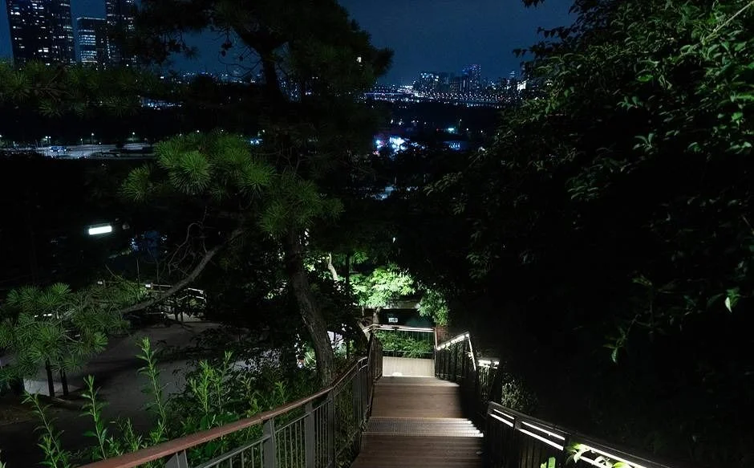
▲ 어둠 속 목재 계단과 난간 조명이 보이는 산책로. 정확한 구간과 촬영 시기는 자료에 없다. ⓒ 한국관광공사 · 공공누리 제1유형
야간에는 조명이 비춘 좁은 계단만 보이지만, 낮 사진에서는 산책로가 나무 난간을 두른 데크 형태로 이어지는 모습이 확인된다. 서울시 미디어허브도 입구부터 데크 계단이 잘 되어 있다고 안내한다. 다만 아래 사진이 어느 구간인지는 자료에 없다.
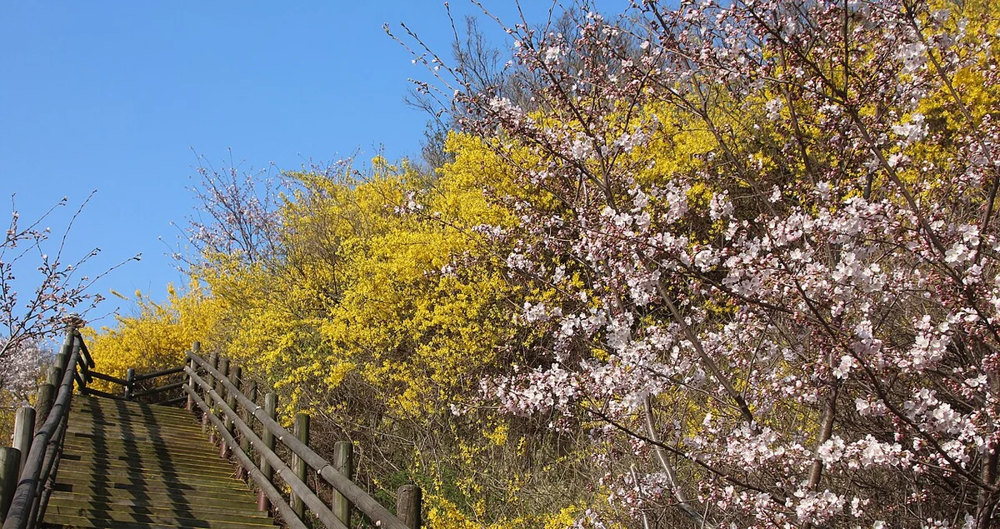
▲ 난간이 달린 목재 산책로 옆 비탈에 노란 꽃과 분홍 꽃이 핀 장면. 촬영일은 2016-04-01(원본 설명)이며 구간은 자료에 없다. ⓒ Korea.net(문화체육관광부 해외문화홍보원), Wikimedia Commons (CC BY-SA 2.0)
5. 주차·차로 가는 길 — 정상에는 차를 댈 수 없다고 안내된다
서울시 미디어허브는 응봉동 공영주차장이 응봉역 근처에 있고 24시간 운영이며 5분당 100원이라고 안내한다. 규모가 작아 아침 일찍부터 찰 수 있다고도 적는다. 축제 기간에는 인근 골목의 불법주정차 단속이 강화되므로 대중교통을 권한다. 정상부 주차장 유무와 주택가 주차 가능 여부는 공식 확인하지 못했다.
| 항목 | 확인한 내용 | 미확인 |
|---|---|---|
| 응봉동 공영주차장 | 응봉역 근처, 24시간, 5분당 100원, 소규모(서울시 미디어허브) | 주차면 수·정확한 주소 |
| 정상·주택가 주차 | 공식 안내 없음. 축제 기간 불법주정차 단속 강화 | 평시 단속 여부 |
| 암벽등반공원 입구 골목 | 관광공사 주소 독서당로60길 13-1(응봉동). 사진상 골목이 좁아 보임 | 주차 가능 여부 |
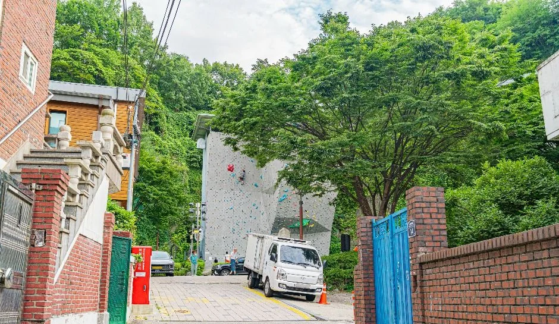
▲ 응봉산 암벽등반공원으로 이어지는 주택가 골목. 촬영 시기는 자료에 없다. ⓒ 한국관광공사 · 공공누리 제1유형
6. 겨울 새벽·야간 — 챙길 것
성동구가 2024년 응봉산 해맞이축제를 안내하며 올린 공지에는 추운 야외에서 오래 일출을 기다리는 만큼 보온 의류와 방한용품을 준비해 저체온증과 동상을 예방하라는 내용이 있다. 같은 안내는 겨울 야간 산행에 손전등, 아이젠, 따뜻한 음료를 챙기라고 적었다. 2024년 행사 기준의 일반 안내이며 2027년 행사 계획은 확인하지 못했다. 서울시 일출 명소 성동구 안내 바로가기
| 상황 | 할 일 | 근거 |
|---|---|---|
| 눈·결빙 | 계단 구간이 있어 미끄럼에 대비. 눈 직후 제설·통제 정보는 확인하지 못함 | 성동구 안내(아이젠) |
| 일몰 후 하산 | 손전등 지참. 전 구간 조명 여부는 공식 확인하지 못함 | 성동구 안내 |
| 1월 1일 새벽 | 일출 07:47. 대중교통 이용, 방한용품 준비 | 성동구 2024 안내·한국천문연구원 |
| 행사 문의 | 성동구 문화체육과 02-2286-5203(2024년 안내 번호) | 서울시 일출 명소 페이지 |
| 늦은 밤 산행 | 혼자 오르는 것은 피하고 난간 밖으로 나가지 않기 | 일반 안전 수칙 |
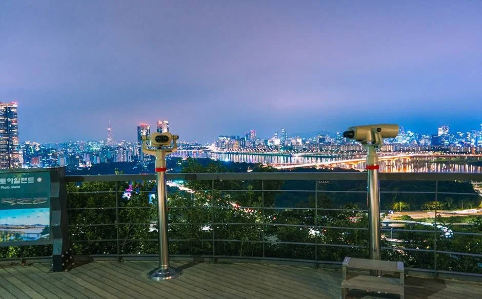
▲ 망원경과 안내판이 있는 전망 데크에서 본 야경. 촬영 시기는 자료에 없다. ⓒ 한국관광공사 · 공공누리 제1유형
7. 오르는 길목의 암벽등반공원 — 같이 알아 둘 것
한국관광공사에 따르면 응봉산 암벽등반공원은 산을 오르는 길목에 있는 인공암벽 시설이다. 과거 채석 후 방치된 곳에 대한산악연맹의 자문과 검증을 거쳐 인공암벽을 설치했고, 볼더링장과 직벽이 있다. 이용료는 무료지만 서울시 공공예약 시스템에서 예약해야 하고 장비는 대여·판매하지 않아 직접 지참해야 한다. 팔각정만 보러 간다면 이 시설 이용은 필요하지 않다.
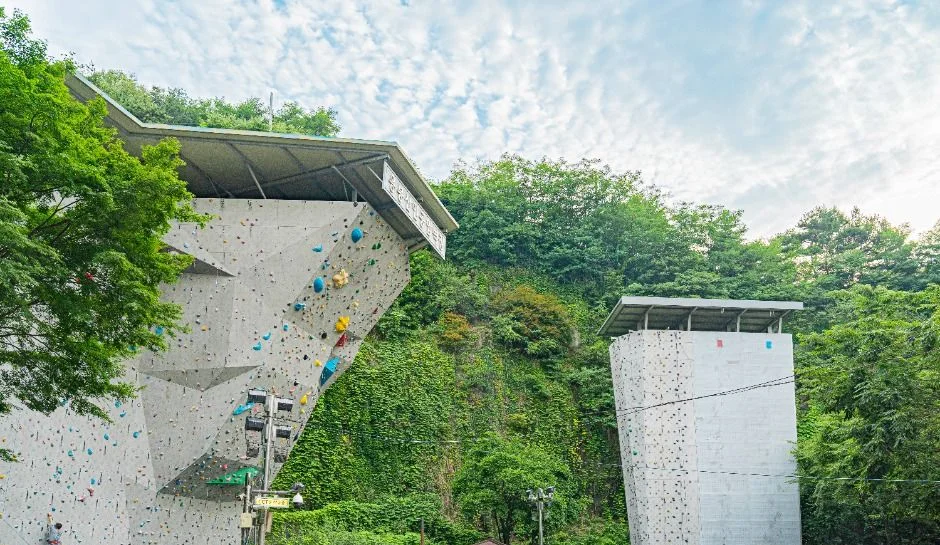
▲ 응봉산 암벽등반공원의 인공 암벽. 촬영 시기는 자료에 없다. ⓒ 한국관광공사 · 공공누리 제1유형
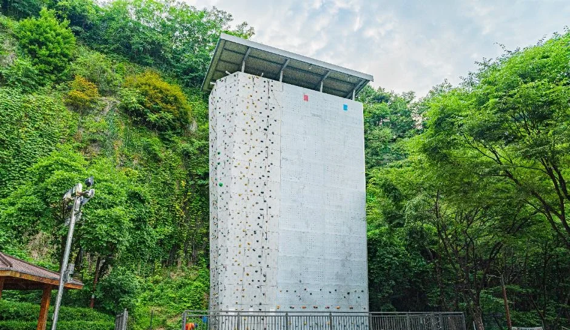
▲ 직벽형 인공 암벽. 촬영 시기는 자료에 없다. ⓒ 한국관광공사 · 공공누리 제1유형
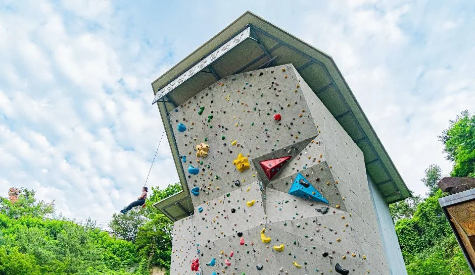
▲ 홀드가 촘촘히 박힌 인공 암벽의 비스듬한 면. 촬영 시기는 자료에 없다. ⓒ 한국관광공사 · 공공누리 제1유형
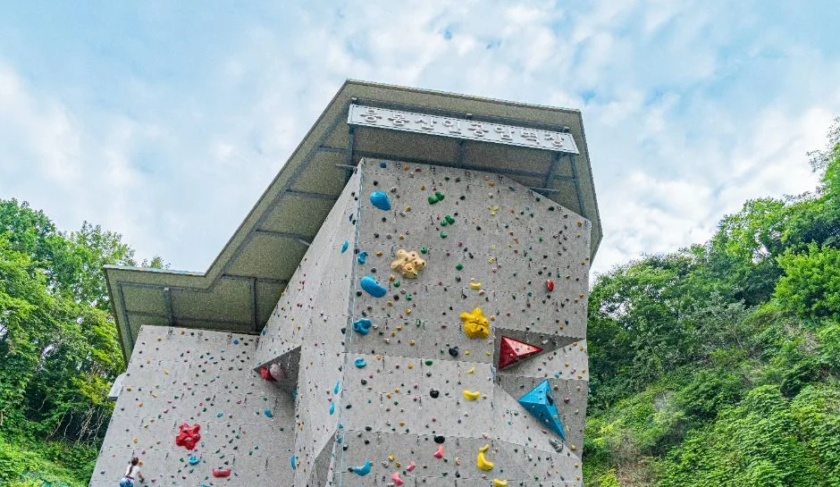
▲ 숲과 맞닿은 각진 인공 암벽. 촬영 시기는 자료에 없다. ⓒ 한국관광공사 · 공공누리 제1유형
사진에서 보듯 암벽 시설은 산자락의 숲과 맞닿아 있다. 한국관광공사 정보 기준 무료이지만 예약이 필요하고 장비는 직접 챙겨야 하므로, 현행 운영 여부와 예약 방법은 서울시 공공예약 시스템에서 다시 확인하자.
8. 일몰 코스로 짜면
이동 시간은 자료마다 달라 단정할 수 없다. 아래는 일몰 시각을 기준으로 한 예시이며 11월 중순(일몰 17:22) 기준이다.
| 시각(예시) | 할 일 | 체크 |
|---|---|---|
| 16:00 무렵 | 응봉역 1번 출구 출발 | 입구까지 약 10분(서울시 미디어허브) |
| 16:10~16:40 | 등산로 입구에서 정상까지 | 15~20분(서울시 미디어허브) |
| 16:50 | 팔각정 도착, 자리 잡기 | 일몰 17:22 |
| 17:22 이후 | 일몰과 박명 감상 | 시민박명 종료는 12월 1일 기준 17:43 |
| 18:00 이후 | 손전등으로 하산 | 대중교통 이용 |
같은 서울의 전망·야경은 북서울꿈의숲 전망대 야경 기사가 다루고, 도심 걷기 코스는 부암·성북동 숨은 산책 기사에 있다. 해가 지는 시간대 드라이브는 일출·일몰 드라이브 명소 기사, 서울 도심 주차 요령은 서울 무료 주차 명소 기사를 참고하자.
✅ 출발 전 체크
1) 24시간·무료 개방은 서울시 미디어허브 안내 기준 2) 응봉역 1번 출구에서 등산로 입구 약 10분, 정상까지 15~20분(자료마다 다름) 3) 정상 주차장은 확인하지 못해 대중교통 이용 4) 11월 말~12월 초 일몰 17시 14분 안팎, 1월 1일 일출 07시 47분 5) 한국관광공사 야경·암벽 사진은 촬영 시기가 자료에 없고, 낮 사진 3장은 Wikimedia Commons 원본 설명상 촬영일(2016-04-01, 2019-07-29)이 있다.
9. 정리
응봉산 팔각정은 서울시 미디어허브 안내상 24시간 무료로 열려 있고, 응봉역 1번 출구에서 등산로 입구까지 약 10분, 정상까지 15~20분 걸린다. 높이는 81m와 약 95m로 자료마다 다르고, 서울의 11월 말~12월 초 일몰은 17시 14분 안팎이다.
산 높이의 공식 단일 수치, 정상 조명·야간 안전 설비, 평시 주차 단속 여부, 중랑천·한강 합류부의 정확한 시야각, 2027년 해맞이 행사 계획은 확인하지 못했다. 이 기사는 2026년 10월 20일 기준이므로 방문 전 성동구청 문화체육과(02-2286-5203, 2024년 안내 번호)에 확인하자.